Zawodnicy
Aleksander Stawirej
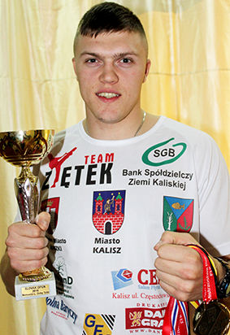Boks / Full contact
2010
2 Miejsce w Międzyokręgowych Mistrzostwach Młodzików w Boksie – Świdnica 2010r.
1 Miejsce w Gali Sportów Walki "Nad Borkiem" – Kosarzyn 28.08.2010r.
1 Miejsce w III Międzynarodowym Turnieju Bokserskim Młodzików – Szczecin 10-12.12.2010r.
2011
3 Miejsce w Mistrzostwach Wielkopolski Kadetów w Boksie – Poznań 17-20.03.2011r.
2 Miejsce w Mistrzostwach Polski Kadetów w Kick-Boxingu semi-contact – Bielsko-Biała 13-15.05.2011r.
1 Miejsce w Turnieju Bokserskim o Puchar Burmistrza Gostynia – Gostyń 01.10.2011
1 Miejsce w Memoriale Bokserskim im. Z.Sułczyńskiego M. Akonoma – Zbąszyń 15.10.2011r.
2012
2 Miejsce w XXX Międzynarodowym Turnieju Bokserskim o "Srebrną Łódkę" im. Stanisława Ambroziewicza – Łodź 2012r. (01.2012)
1 Miejsce w Mistrzostwach Wielkopolski Kadetów w Boksie – Złotów 2-3.02.2012r.
1 Miejsce w eliminacjach do Ogólnopolskiej Olimpiady Młodzieży – Oława 2-3.06.2012r.
1 Miejsce w Mistrzostwach Polski Juniorów Młodszych w Kick-Boxingu Full Contact – Błaszki 15-17.06.2012r.
I miejsce na Ogólnopolskiej Olimpiadzie Młodzieży Wieliczka 2012
2013
Mistrzostwo Europy w Kickboxing full contact - Krynica Zdrój
2014
Mistrz Polski w Kickboxing full contact
Mistrzostwo Świata w Kickboxing full contact we Włoszech
Vice mistrzostwo Polski w boksie Nowa Dęba
2015
złoty medal i tytuł Mistrza Polski na MISTRZOSTWACH POLSKI JUNIORÓW W KICKBOXINGU
w formule LIGHT-CONTACT 29-31.05.2015 r. w Ostrowcu Świętokrzyskim;
Mistrz Europy Juniorów w kickboxingu 25-29 sierpnia 2015 r. w San Sebastian, Hiszpania;
Mistrz Młodzieżowych Mistrzostw Polski Kickboxingu full contact 23-24.10.2015 r. Kalisz
wicemistrz Świata Kickboxingu Seniorów w formule Light contact 21-29.11.2015 r. Dublin
2016
Mistrzostwo Polski w Kickboxing full contact seniorów Piotrków Trybunalski – 2016
Vice mistrzostwo Europy w Kickboxing full contact w Grecji
2017
Vice-Mistrz Polski Seniorów - Mistrzostwa Polski Seniorów w Boksie w wadze +91
CZŁOPA 2017
2018
Młodzieżowy Mistrz Polski w boksie olimpijskim - Sulejów 2018
Robert Niedźwiedzki
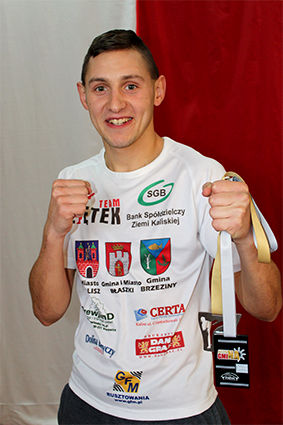Full contact
51kg MP Błaszki 2012 kickboxing junior
54kg MP Brzeziny 2013 kicboxing junior
54kg ME Krynica Zdrój 2013 kickboxing junior
57kg vice MP Wysocko Małe 2013 młodzieżowiec
57kg MP Brzeziny 2014 młodzieżowiec
57kg MP Luboń 2015 senior
57kg vice MP Kalisz 2015 młodzieżowiec
57 kg PŚ Dublin 2015
57kg brązowy medal MŚ Dublin 2015 senior
57kg MP Piotrków Trybunalski 2016 senior
57kg PE Tatrzańska Bystrzyca 2016 senior
57kg PŚ Dublin 2016 senior
60kg MP Kalisz 2016 Młodzieżowiec
57kg vice MP Piotrków Trybunalski 2017 senior
60kg MP Kalisz 2017 młodzieżowiec
57kg MP Kalisz 2018 senior
60kg vice MP Błaszki 2018 młodzieżowiec Light Contact
57 kg MP Leszno 2015 senior
57 kg MP Włoszakowice 2017 senior Boks
Walki stoczone:36 Walki wygrane 26 Walki przegrane 9 Remis 1
Sebastian Kusz
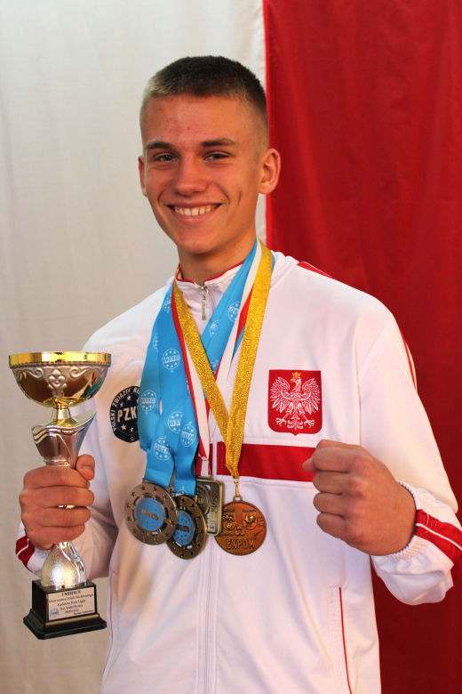Kickboxing
Brązowy medal mistrzostw świata w kick light 15-23 września Włochy lidio Di jesolo kadet starszy +69, 2018
Srebrny medal mistrzostw świata light contact 15-23 Włochy lidio di jesolo kadet starszy +69kg, 2018
1 miejsce mistrzostwa Polski kadet starszy +69kg kick light myśadło 27-29.04.2018
1 miejsce mistrzostwa Polski w light contact Kurzętnik +69 kg 8-10.06.2018
Brązowy medal z OOM w boksie 2018 Konin
Brązowy medal młodzików w boksie Tarnowo Podgórne 11-15.10.2018
Brązowy medal z mistrzostw Polski w light contact kadet młodszy +47kg Lubawa 28-30.03.2014
2 miejsce puchar Polski kadet starszy +69 light contact Węgrów 10.11.2017
2 miejsce mistrzostwa Polski Kadetów w kickboxingu light contact w Lesznie +47 kg
Norbert Kusz
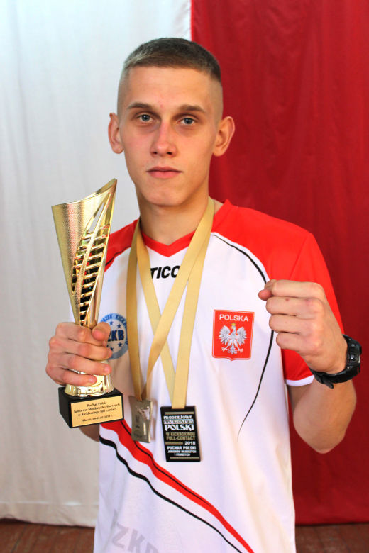Kickboxing
1 miejsce Mistrzostw Polski w kickboxingu juniorów młodszych i seniorów Full Contact -71kg Kalisz, 6-7 kwietnia 2018r.
1 miejsce Puchar Polski juniorów młodszych i starszych -71kg Błaszki 4-5 maja 2018r.
1 miejsce Mistrzostw Polski w kickboxingu light-contact -69kg wybrany najlepszym kadetem mistrzostw Rydzyna 2017
3 miejsce V mistrzostwa Polski młodzików im. Pawła Szydły -65kg Tarnowo Podgórne 2016r.
1 miejsce puchar Polski w kicboxingu light-contact -69kg. Wybrany najlepszym kadetem turnieju Węgrów 11.11.2017r.
3 miejsce mistrzostw polski w kickboxingu light-contact kadetów młodszych -47 Lubawa, 28-30.03.2014r.
3 miejsce w mistrzostwach Polski w kicboxingu light-contact kadet młodszy -47kg. Muszyna 8-10.03.2013r.
Weronika Bartczak
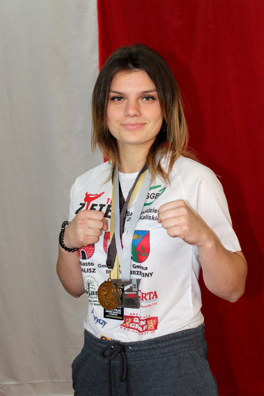Boks / Kickboxing
Brązowa medalistka Mistrzostw Polski w Boksie 2017
Wicemistrzyni międzynarodowych mistrzostw Śląska Kobiet w Boksie 2017
Wicemistrzyni Pucharu Polski light contact 2017
Wicemistrzyni Pucharu Polski w Boksie 2017
Wicemistrzyni Polski w Kickboxingu full contact 2018
Mistrzyni Pucharu Polski w Kickboxingu full-contact 2018
Brązowa Medalistka Mistrzostw Polski w Kickboxingu light contact 2018
Brązowa Medalistka Międzynarodowych Mistrzostw Śląska Kobiet w Boksie 2018
Gabriela Bartczak
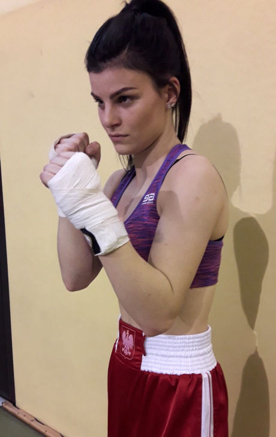Brązowa medalistka x memoriału bokserskiego Zbąszyń 2016
Brązowa medalistka mistrzostw Polski juniorek w boksie Grudziądz 2017r. Waga55 kg
Srebrna medalistka mistrzostw polski w kickboxingu juniorów light contact Leszno 2016
Zwycięzca XXlV turnieju bokserskiego Leszno 2016r.
Brązowa medalistka pucharu polski juniorek w boksie Grudziądz 2017
Mistrzyni Polski w kickboxingu light contact 50 kg Rydzyna 2017
Mistrzyni Polski w kickboxingu full contact 50 kg Błaszki 2018
Mistrzyni Polski full contact kickboxing 50 kg 2017 Kalisz
Vice mistrzyni mistrzostw Polski full contact Kalisz 2018 50 kg
Brązowa medalistka turnieju bokserskiego 50 kg Nowy Sącz 2016
Mistrzyni Polski w kickboxingu light contact 2018 50 kg
Mistrzyni Ziem zachodnich 50 kg Rydzyna 2018
Brązowa medalistka Mistrzostw polski kickboxing full contact Piotrków Trybunalski 2017 50 kg
Gabriela Werner
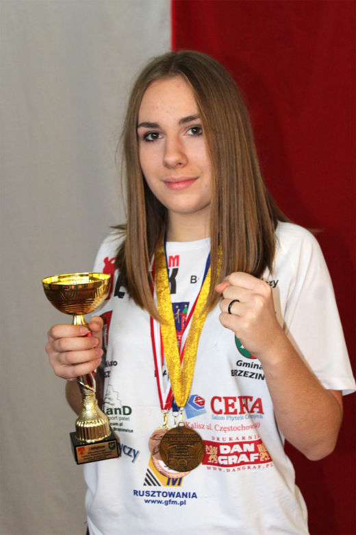Light contact
2016 3 miejsce w kick boxingu light contact kadet młodszy +47 kg
2018-Mistrzostwo Wielkopolski w boksie kadetka 70kg
2018-Mistrzostwo Polski w kick boxingu light contact kadet starszy +65 kg
2018-Brązowy medal pucharu w boskie kadetka 66 kg
Trenuje od 2014
Kacper Ziętek
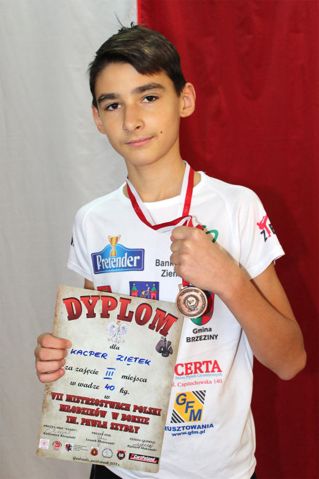Full contact
Brązowy medalista Młodzików w boksie Grudziądz
Julia Durkiewicz
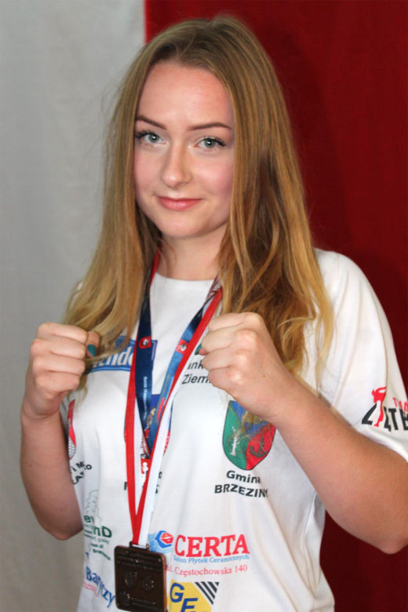Boks / Full contact
Brązowy medal na OOM w boksie, w wadze do 75, w Koninie 2018
Trenuje od niecałego roku
Beniamin Jamroziak
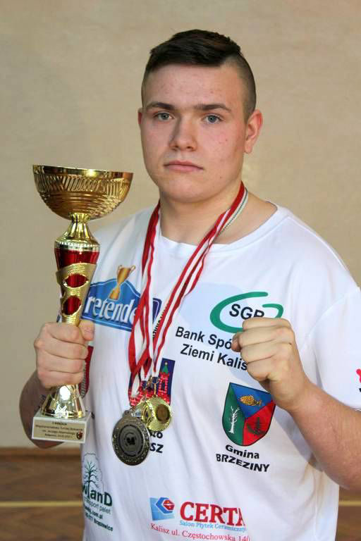Full contact
Trenuje od 2014
Mistrz Wlkp juniorów +91kg 10.02.2018
Mistrz Wlkp kadetów Konin 17-19.03.2017 +80
1 miejsce międzynarodowy turniej bokserski im. Jerzego Adamskiego Bydgoszcz 14.05.2017 kadet +80
Vice mistrz Wlkp Poznań 2016 kadet +80
Wygrana w 10 memoriale bokserkim im Mariana Akanoma i Zbigniewa Szułczyńskiego, Zbąszyń 22 października 2016
Złoty medal mistrzostw Polski juniorów kick boxing full contact Kalisz 2018 +91
Brąz kick light Kartuzy 9-11.03.2018 -94
3 miejce międzynarodowy puchar Polski boks kadet Grudziądz 1.10.2017
3 miejce light contact turniej o puchar prezesa sądeckich wodociągów 2016 r.
Aleksandra Trawczyńska
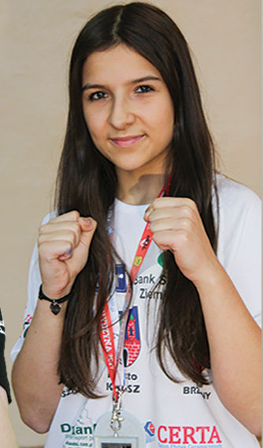Full contact
1 miejsce light contact - Rydzyna 2017 kadet -65kg
2 miejsce Puchar Polski light contact - Węgrów 2017 junior -60kg
3 miejsce full contact - Kalisz 2018 junior -56kg
Trenuje od Września 2016
Olaf Pera
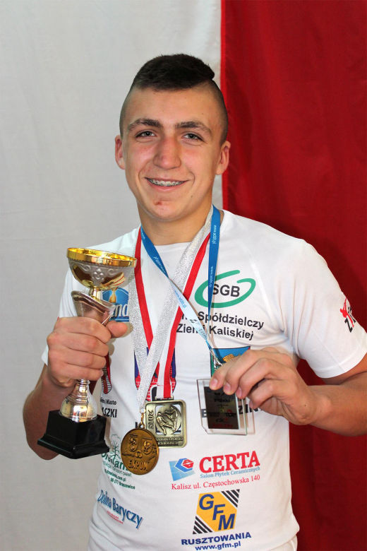Full contact
Brązowy medal na mistrzostwach Polski lite contact Rydzyna 2017 +47
Srebrny medal na mistrzostwach Polski lite contact Kurzętnik 2018 +69
Złoty medal mistrzostw Polski kick light Mysiadło 2018 +57
Trenuje od Września 2016
Adrian Sęderecki
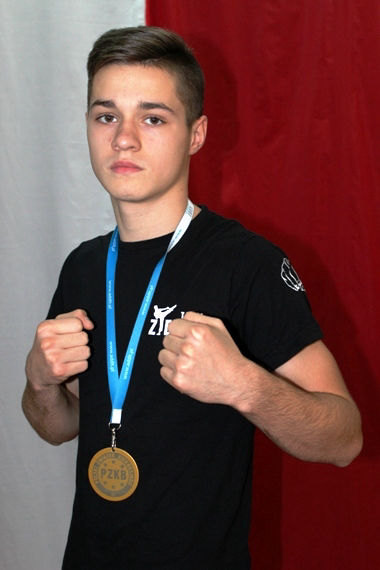Mistrzostwo Świata WFMC Niemcy waga 40 kg. Light cotnact 2015
Vice-mistrzostwo Świata WFMC Niemcy waga 60kg light contact 2017
Vice-mistrz Polski młodzików w boksie waga 48 kg 2016
Puchar polski Ligcht contact waga 57 kg 2017
2 i 3 miejsce na mistrzostwach polski 2017/2018 w Light contact
3 miejsce na pucharze polski kadetów w boksie waga 57kg 2018 Grudziądz
1 miejsce na mistrzostwach polski PFKB waga 60 kg 2017
1 miejsce polish fight kids waga 42kg 2016
3 miejsce puchar Czech 2014 waga 35kg
3 miejsce na pucharze świata w austrii waga 45kg. Light contact 2016
1 miejsce Bośnie i Hercegowina 2014 waga 32kg light contact
Trenuje od 2012
Julia Kabzińska
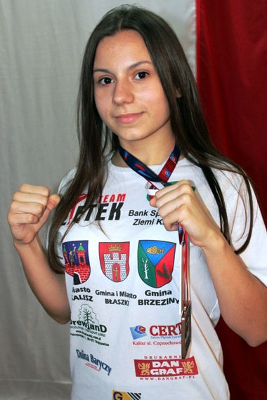Full contact
2 miejsce World Cup, Niemcy, 2013, -35kg, Light Contact
1 miejsce Universal UFR Runda Zer0, Tarczyn, 2013, -145 cm Semi Contact
1 miejsce Universal UFR Runda Zer0, Tarczyn, 2013, -35kg, UFR Tatami
1 miejsce II Mistrzostwa Polski sztuk walk federacji WFMC, Mińsk Mazowiecki, 2014, -35kg, Light Contact Młodzik Dziewczęta
2 miejsce II Mistrzostwa Polski sztuk walk federacji WFMC, Mińsk Mazowiecki, 2014,-35kg, Light Contact Młodzik Open dziew
1 miejsce Mistrzostwa Polski sztuk walk ICO, Sulejówek, 2017, -55kg, Kick Light
1 miejsce European Cup, Tarczyn, 2017, -50kg, Kick Light
3 miejsce Puchar Polski Kickboxingu, Węgrów, 2017, -50kg, Light Contact
3 miejsce Otwarte Mistrzostwa Polski sztuk walk federacji WKSF, Mińsk Mazowiecki, 2018, -165cm, Pointfighting
1 miejsce Otwarte Mistrzostwa Polski sztuk walk federacji WKSF, Mińsk Mazowiecki, 2018, -50kg, Kick Light
2 miejsce Zunifikowane Mistrzostwa Europy, Świdnica, 2018, -50kg, Light Contact
2 miejsce VII Puchar Polski kadetek w ramach XXVII Turnieju Miast Kopernikańskich w boksie, Grudziądz, 2018, 50kg
1 miejsce Mistrzostwa Polski sztuk walk ICO, Sulejówek, 2018, -55kg, Kick Light
3 miejsce Ogólnopolska Olimpiada Młodzieży w Sportach Halowych, Konin, 2018, 50kg, Boks
2 miejsce Mistrzostwa Ziem Zachodnich w kickboxingu, Rydzyna, 2018, 52kg
Trenuje od 2011 i od tego trzeba odjąć 2 lata przerwy
Wiktoria Kabzińska
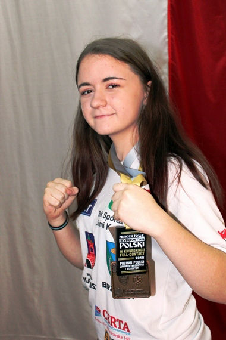Full contact
Brązowy medal na Ogólnopolskiej Olimpiadzie Młodzieżowej w Boksie 2017, w Pułtusku, waga 50kg
Brązowy Medal na Pucharze Polski Kadetek w Boksie 2017, w Grudziądzu , waga 50kg
Pierwsze miejsce na Mistrzostwach Ziem Zachodnich w Kickboxingu full contact 2018, w Rydzynie, waga 52kg
Vice-mistrzostwo w kickboxingu Juniorów młodszych full contact 2018, w Kaliszu, waga 52kg
Pierwsze miejsce na Pucharze Polski Juniorów młodszych w kickboxingu full contact 2018, w Błaszkach, waga 52kg
Brązowy medal na Ogólnopolskiej Olimpiadzie Młodzieżowej w Boksie 2018, w Koninie, waga 50kg
Brązowy medal na Pucharze Polski Kadetek w Boksie 2018, w Grudziądzu, waga 52kg
Pierwsze miejsce w Memoriale Bokserskim w Zbąszyniu 2018
Trenuje od 2011 roku
Zuzanna Nowakowska
3 miejsce na OOM (boks) 2017 w kat 52 kg
3 miejsce na Międzynarodowych Mistrzostwach Śląska 2017 (boks) w kat 52 kg
Wygrana w eliminacjach w Grudziądzu do OOM 2018 kat 54 kg
Trenuje od 2016
Damian Gawłowski
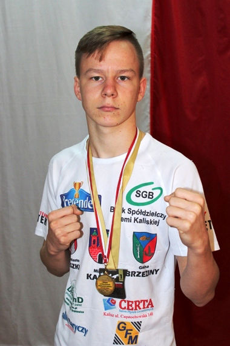I miejsce na Mistrzostwa polski w kb 6-7.04.2018/
Puchar polski w kb 4-5.05.2018/
pas w federacj w kb UfR 08.04.2017
2 MIEJSCE Puchar Polski w boksie 2miejsce 01.10.2017
2 MIEJSCE na pucharze górnego Ślaska w kb 23.04.2017
Dominik Król
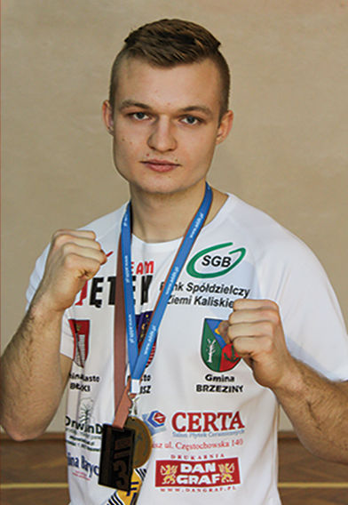3 miejsce, Luboń 10-12 kwietnia 2015, full cotnact MP juniorów, waga 71
3 miejsce, Kalisz 2016, full contact MP mlodziezowe, waga 71
3 miejsce Kalisz 28-29 pazdziernika 2017, full contact MP mlodziezowe, waga 67
3 miejsce Kalisz 6-7 kwietnia 2018, full contact, MP seniorów, waga 71.
Trenuje od wiosny 2013
Bartosz Olewicki
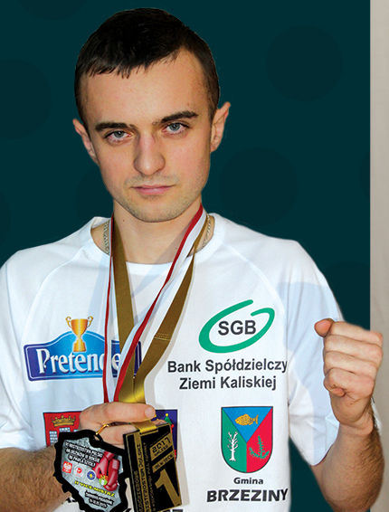Mistrz Polski kickboxing 2018 51 kg
Mistrz Polski kickboxing 2017 51 kg
Mistrz Polski kickboxing 2016 48 kg
Brązowy medal młodzieżowych mistrzostw Polski w boksie 2017
Trenuje od jakiegoś 2005 roku
Oskar Skupień
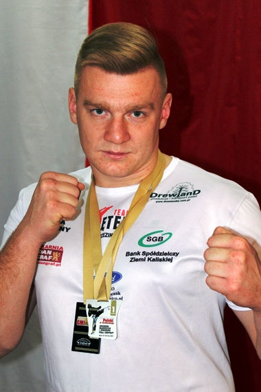Mistrzostwo Polski juniorów full contact 2013 brzeziny
Mistrzostwa Polski zunifikowane pfkb złoty medal plus tytuł najlepszego zawodnika Mazovia cup 2012
Złoty medal k1 Mistrzostwa Polski full contact seniorów Piotrków Trybunalski
Złoty medal Młodzieżowe mistrzostwa Polski brzeziny 2014
Złoty medal Mistrzostwa Polski południowej light contact 2012
Złoty medal Mazovia cup 2016
Złoty medal k1 Puchar Europy wako Bośnia i harcegowina
2 srebra full i light Puchar Świata Irlandia irish open 2016
Srebro full contact Mistrzostwa Polski seniorów full contact 2015 Luboń
Srebro Młodzieżowe mistrzostwa Polski full contact 2018 Błaszki
Złoto Mistrzostwo Polski służb mundurowych 2013 light contact Rzeszów
Złoto Mistrzostwo Polski juniorów 2014 Ostrów Wielkopolski
Złoto mistrzostwa Europy juniorów 2013 Krynica Zdrój
Zawodowy mistrz Polski k1 2018 pfkb
Anna Szymańska
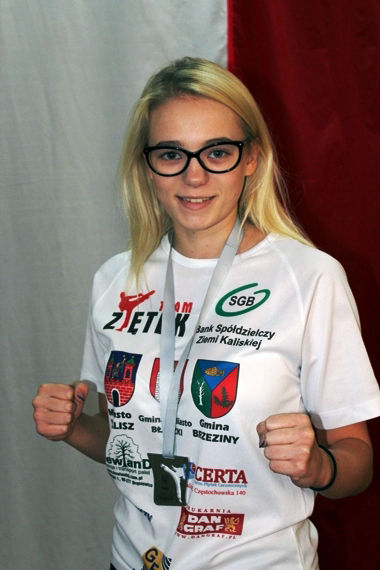I miejsce na MP w Luboniu 2015 w formule full contact -52kg
I miejsce na MP w Piotrkowie Trybunalskim 2016 w formule full contact -52kg
II miejsce na MP w Piotrkowie Trybunalskim 2017 w formule full contact -56kg
I miejsce na MP z Lesznie 2016 w formule light contact -55kg
I miejsce Polish Open Wako European Cup 2016 w Ostrowcu Świętokrzyskim w formule full contact -52kg
II miejsce MP Służb Mundurowych we Wrocławiu 2018 w formule kick light -55kg
III miejsce Mistrzostwa Europy w Hiszpanii San Sebastian 2015 w formule full contact -56 kg
Weronika Stochniałek
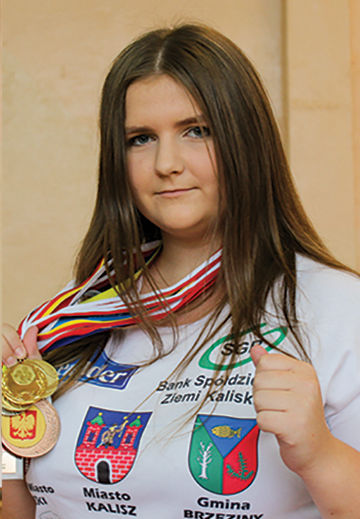Trenuje od 21 stycznia 2015
3 miejsce na eliminacjach do ogólnopolskiej olimpiady młodzieży (OOM) w boksie 2015
2 miejsce w II Ogólnopolskim Turnieju o Puchar Włókiennika Łódź w Boksie 2016
3 miejsce w turnieju "O Puchar Prezesa Sądeckich Wodociągów" w kickboxingu w formule light contact - Nowy Sącz
2 miejsce w eliminacjach do Ogólnopolskiej Olimpiady Młodzieży w Boksie
2 miejsce i tytuł wicemistrzyni Polski w Ogólnopolskiej Olimpiadzie Młodzieży w Boksie 2017
2 miejsce w Międzynarodowych Mistrzostwach Kobiet w Boksie
3 miejsce w Mistrzostwach Polski Juniorek w Boksie
3 miejsce w Mistrzostwach Polski Juniorów w Kickboxingu w formule light-contact
2 miejsce w Pucharze Polski Juniorek w Boksie
2 miejsce w Pucharze Polski Juniorów w kickboxingu w formule light-contact
powołanie do kadry Wielkopolski kobiet w boksie olimpijskim 2018
2 miejsce i tytuł wicemistrzyni Polski w Mistrzostwach Polski Juniorek w Boksie
3 miejsce w Mistrzostwach Polski w kickboxingu w formule kick-light
2 miejsce w Mistrzostwach Ziem Zachodnich w Kickboxingu w formule full-contact
3 miejsce w Mistrzostwach Polski w kickboxingu w formule full-contact
Mateusz Pędziwiatr
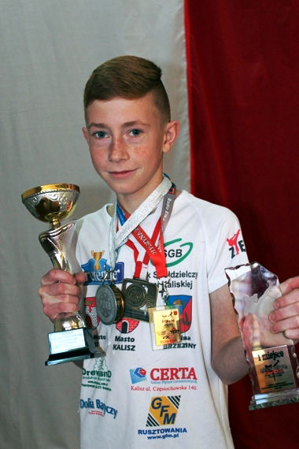1 miejsce w wadze 28 kg w mistrzostwach Polski kadetow młodszych w kickboxingu light-contact w Rydzynie w roku 2017
2 miejsce w wadze -32 kg light contact juniorow i kadetow . kategoria wiekowa kadet młodszy Węgrów 10.11.2017r
1 miejsce w kategorii -32kg mistrzostwa polski w kickboxingu 29.04.2018r Mysiadło kadet młodszy kick light
2 miejsce w mistrzostwach Polski w kickboxingu kategoria kadet młodszy -32 kg 08.06.2018r Kurzętnik
A trenuje już około 3 lat
Bartosz Biadała
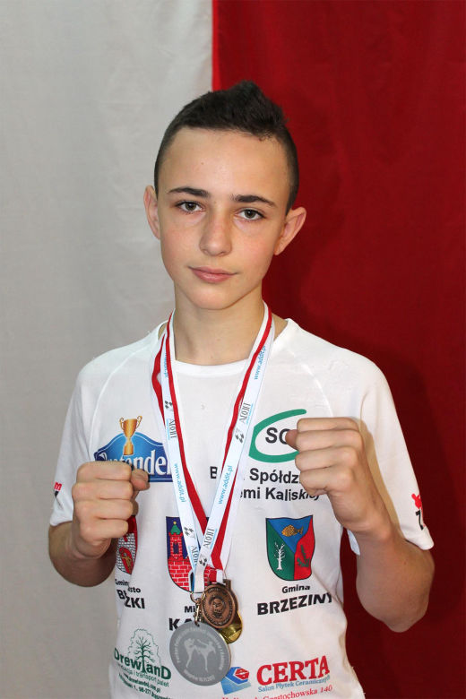Puchar Polski KickBoxingu light contact juniorów i kadetów 2 miejsce w Węgrowie 2017
Trenuje od 2016
Marcin Zdun
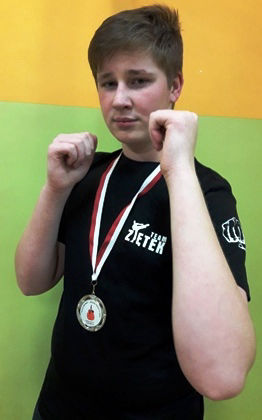Brązowy medalista Młodzików w boksie Grudziądz
Olga Michalska
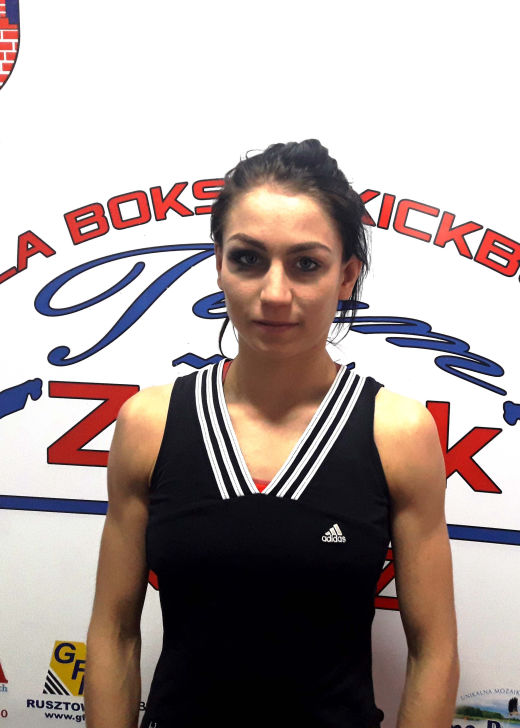Wicemistrzyni na Młodzieżowych Mistrzostwach Polski w Boksie
Kacper Synoradzki
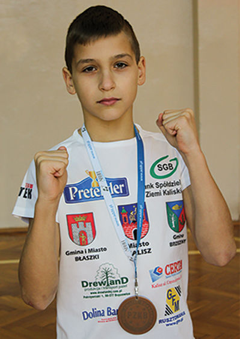Mistrz Polski Kickboxingu w formule kick light Mysiadło
Weronika Walczak
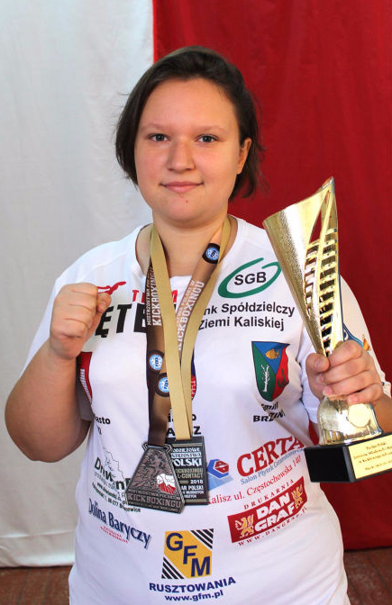brązowa medalistka Mistrzostw Polski w kickboxingu light contact